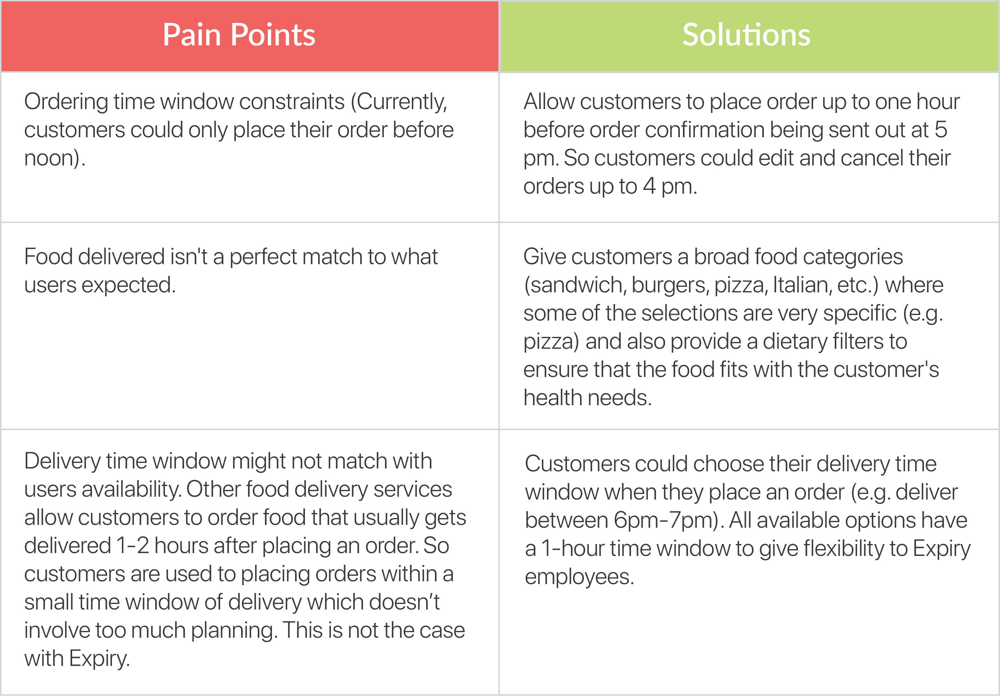
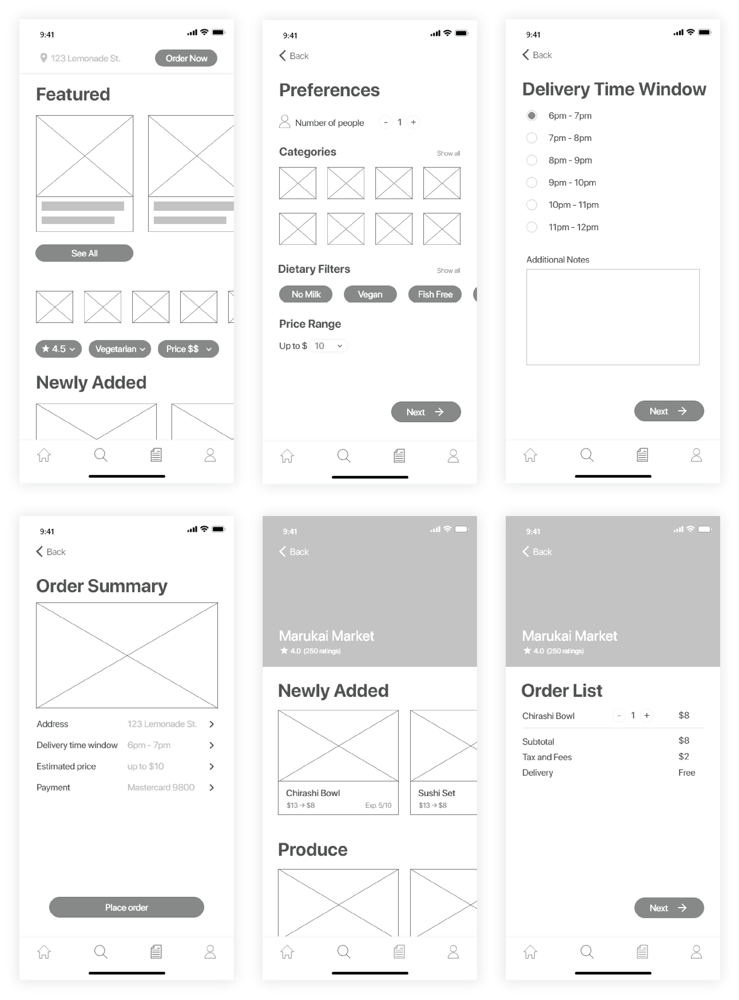

GOAL
ROLE & SKILLS
Improve Expiry user experience that gives customers more control over their orders.
Product Designer
Product Design, Research, UI/UX Design, Prototyping, Interaction Design
Date: 4 May 2019 - 7 May 2019
Project Summary
Expiry is a new food delivery service that only delivers food from grocery stores and restaurants that are just meeting
the end of their shelf life – think that sushi box from Whole Foods or this morning’s pastries from the local bakery. Expiry has been operating
under a “mystery box” subscription that lets users set their preferences (e.g. number of people, vegan, only produce) and allows them to place an
order before noon for evening delivery.
Recently, Expiry has been losing customers. After doing user research, it turned out the customers want more control over their orders. The task
is to design an experience that allows customers to easily place same-day orders from a dynamic, limited supply of food.
Research
Before jumping into the design process, I did online research about the problem of food waste that the world, especially the United States,
is facing. This stage doesn't only help me get a deeper understanding of Expiry goal but also to understand the target customers which will help
in creating personas that fit.
- Food wasteAccording to a recently published study funded by the USDA in 2018, American consumers produce about one pound of food waste
every day which equals to 225-290 pounds per year. Roughly 20% of food is trashed every year which can be used to feed 2 billion people.
- Environmental ProblemFood waste raises a concern for environmental sustainability. The so-called "Western diet" is one of
the major contributors to greenhouse gas emissions and land use. Food waste accounts for 19% of landfill waste which is connected to the
production of greenhouse gases.
- Effort in reducing food wasteAccording to The Guardian article, a couple of large grocery chains in the US have committed
to trying in reducing their food waste.
Pain Points & Solutions
After reading the design prompt, I listed the possible pain points that Expiry customers might go through. Two of the pain points are related to the timing
of the service which is something that we could easily tackle and make an adjustment to give customers the feeling of having control over their orders.

Persona
To better empathize and understand the customer's need, I created a persona that captures all the pain points that were identified in the earlier
process. This persona will be used throughout all the future designing process by continuously looking and referencing the user struggles and
needs, especially during the sketches and wireframing stage where we want to focus on the features and structures of the app.
User Flow
The next step that I take after listing the needed features and solutions based on the identified pain points
is creating the user flow map. This helps to decide the pages needed and what information needs to be presented on that page while ensuring
that the flow is smooth. Creating the user flow map ahead will speed up the wireframing process and ensuring that we don't miss any necessary
steps/pages. The technique that I often used to create a user flow is an objective-driven approach where I reverse engineer the tasks needed to
accomplish the goal. First, I set the goal of the task, then go back and identify all the needed steps in between. Once all the steps are
defined, I'll start stitching them together and build a clear path for the users to go through.
Sketches
Next, I pick 4 of the key screens on one of the sub-flows and quickly sketch them on paper to get a rough idea of what the wireframes will
look like.
Wireframes
After drawing the sketches and mapping out the user flows of the app, I created the wireframes on Adobe XD. The
purpose of creating a low-fidelity prototype before moving on to high-fidelity is to focus on the functionality and the structure of the app
rather than the looks. Although everything has been sketched in the beginning, sometimes a better and more detailed version might come up to
mind during this process. Allowing for the possibility to make the structure more refined. Then after it's been taken care of, I move on to
the high-fidelity prototype where I could switch my focus to the visual aesthetic of the app.

Key Screens
There are 2 different ways for customers to place their orders. The first sub-flow is through the "Order Now" button placed on top
of the screen. This flow will allow a customer to order a "mystery box" by simply filling out the form on their food preferences and
food that match the preferences setting will be delivered to the customers at the chosen delivery time window.
The second sub-flow is through the store cards on the homepage or through their search results. This flow allows a customer to order
a specific item from a specific restaurant/grocery store that they're interested in. By having two sub-flows for placing an order,
customers are given more control over the food they order. If they're not feeling like getting a "mystery box" dinner, they have another
choice by ordering available food that is listed on the store's profile.